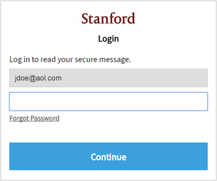

Online Profiles
Your online profile is how a representation of yourself that you create online. These can be used in many places such as:
- Social media
- On the Browser
Significance and Examples
Online profiles form a significant impact on individuals on many levels. Online profiles allow people to improve their social lives by maintain relationships, sharing experiences, exploring communities on platforms such as discord.
A profile can include pictures, posts, and messages that you display to the public, and represents you online. The most basic form of a profile consist of a username and password.
Risks
However, online profiles pose a risk to privacy and security. This information online can be exploited by cybercriminals for various malicious purposes including identity theft, and even stalking.